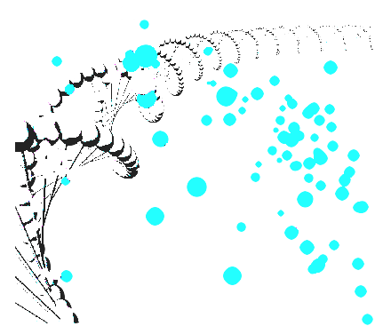

U981 - The Biomarker Discovery Group
Online Interactive Apps

Curve Fitter: Import your own files and let the app fit the optimal cell viability curves for you... You don't need to know what happends under the hood, but you may want to play with the parameters, interactively. Choose your favorite colors and adjust the points size and the lines width. When you are ready, save your plot on your computer and export the curves parameters.

Cell Explorer: Interested in selecting cell lines over (or under) expressing your favorite gene? Explore copy numbers and gene expression of 1500+ cell lines stored in the app. Choose into how many groups you want to cluster the cell lines, then check the one(s) you need for your experiments. When you are done, export the results on your computer, or use the ATCC links to get more information.
?
The next app could be yours!
Contact us and suggest new Apps!